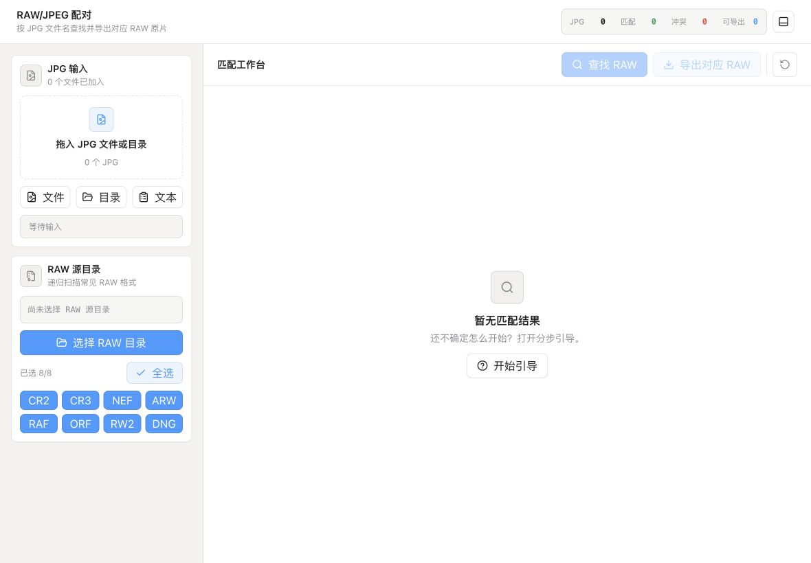

导入 JPEG 清单
从选片结果出发，不再手动翻 RAW 文件夹。

适合拍摄后只交付 JPEG，但仍要归档、二修或交片 RAW 原片的场景。
从选片结果出发，不再手动翻 RAW 文件夹。
自动统计已匹配、冲突、缺失和可导出数量。
遇到多张候选原片时，先确认再导出。
按结果批量导出 RAW，日志保留每次处理记录。
客户端使用 Tauri 构建，下载体积轻，运行在本机文件系统上。它只做一件事：让照片原片配对更快、更稳。
下载地址来自 Gitee 仓库的 release/latest.json，页面会优先使用其中的 installer_url。
正在读取版本清单…
macOS
Windows